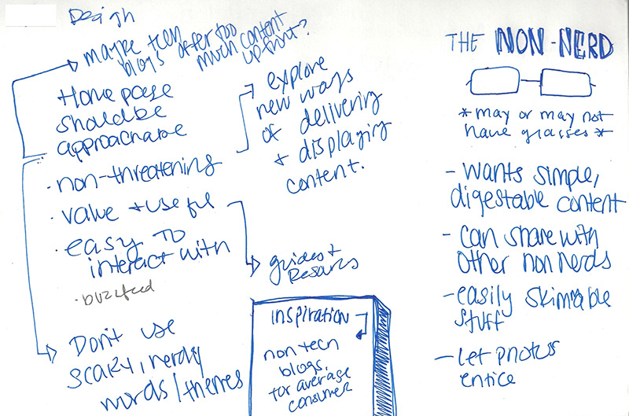
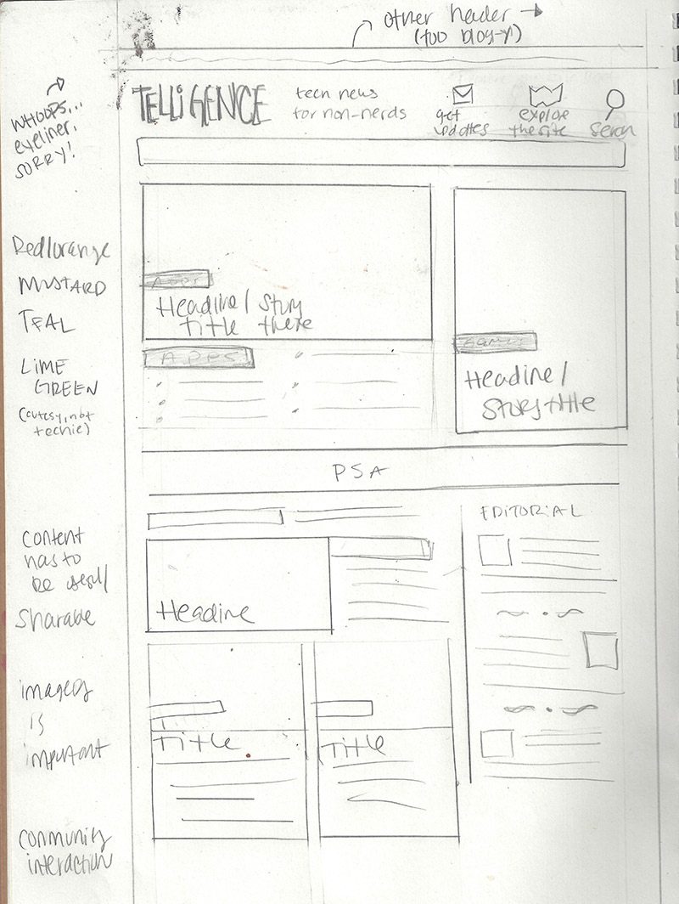
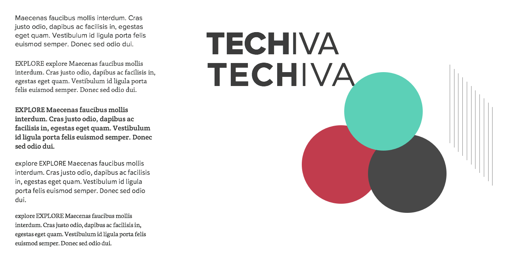
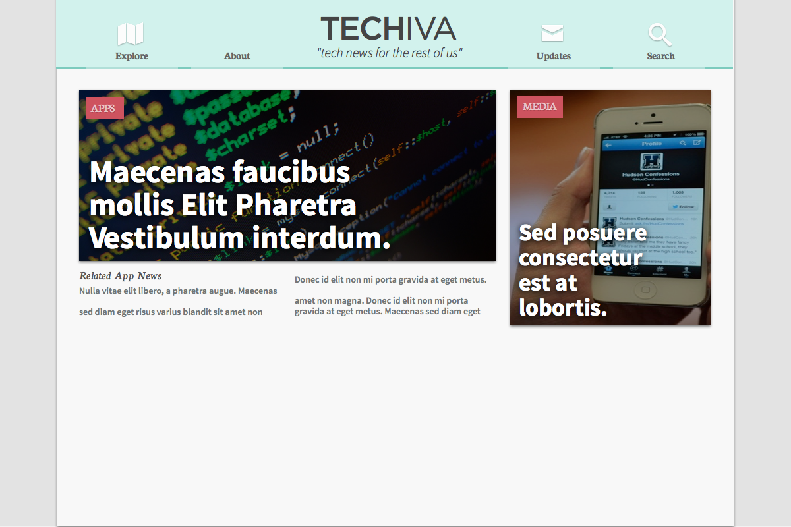
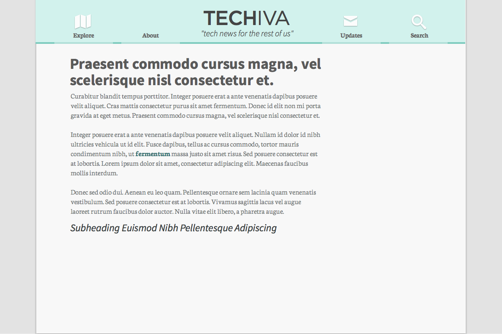

Design a blog themed "tech news for non-nerds".
I'm tasked with:
I digested this information and started writing my thoughts and what a persona would look like. I started to form ideas on considerations for what a 'non-nerdy' blog would have to make. Some expanded highlights of this phase:
And also at this point, I began to look at the online presence of some publications that I would consider "non-geeky" for market research, design ideas, and the like. I remember visiting Cosmopolitain Magazine, Glamour Magazine, Politico, and Vulture. It wasn't all that helpful. I realized that these big "blogs" all seemed a little off-key.
I started sketching out very brief examples of design patterns and elements that had come to mind. At this point, I also came up with the name "Telligence" from "tech" and "intelligence". I didn't think it was that great, but it seemed like it could work. I sat on all of this for a day, while doing other normal things that freelancers do. Ideas needed time to marinate. Throughout the day, I whipped out my hadny dandy notebook and started a more detailed sketch on the train.
I came back to my half finished sketch and filled in some more bits. Througout this sketch process, I aimed to keep it simple, yet play up the content. Large images and headlines were key to me, because it should be easy to skim and understand what's going on. Highlighting different types of content was also something I kept in mind. For the masthead, I at first went with a more traditional look. Later on as I sat on it some more, I sketched out a more 'friendly' masthead that seemed more inviting and useful. At this point I also started to rethink the "Telligence" thing. I felt like it could be misunderstood, or not understood at all. And thus, "Techiva" was born. We're in the honeymoon phase. I like it.
If you're wondering, it comes from the latin word "intecllectiva", meaning intellectual. I boiled that down to Techiva.
I opened Sketch.app - the design was moving from paper to screen. At this point I started thinking about the "iva". I hope it's not girly… it's time to get this brand down pat. I opened up Sketch and started playing with colors and fonts. I chose colors that spoke to the 'tech' theme, but that were not so cliché. After varying between cases and sans serif fonts, I landed upon "TECHIVA" in Proxima Nova and Gotham. This feel serious, authorative and modern.
Sketch.app sucks at kerning.
At this point, I've spent a few hours doing visual design. Honestly, I'm not happy with the way it looks or feels. I'm not sure if it's the whole "designing a website as an image thing" or it's burnout or what. Feels wrong man.
 I don't consider these to be 'finished', but I do realize that it was enough to pivot the direction a little. If this was a serious project, I'd revisit the wireframe stage and maybe take it somewhere else.